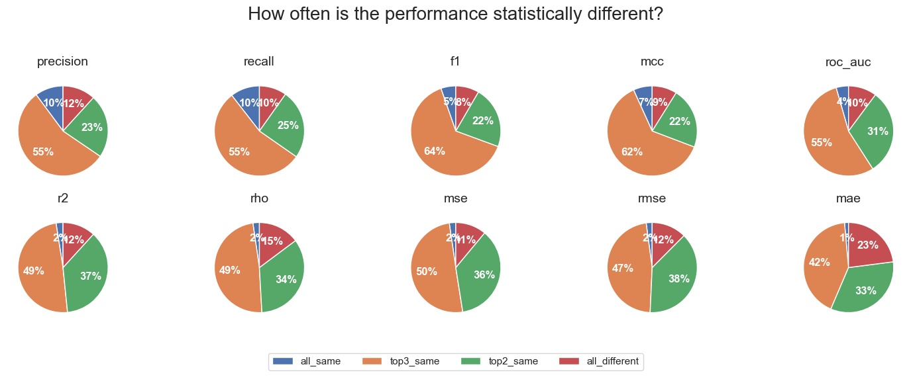

Antonio de la Vega de León
AI/ML expert for Drug Discovery
Fingerprint comparison
I recently read a very interesting paper from the team at Polaris on how best to compare ML models. Some of their recommendations I was already doing, the part about comparing distributions of performance values from different versions of a model. I would usually run models with 10 different seed values and use a boxplot to compare distributions. But I never knew how to perform statistical testing to say if the models were different. This paper provides a template to do just that.
I decided to implement the work on the paper and add it to my toolbox of chemoinformatics code. This was very quick thanks to the large amount of code the team made available. Once I made sure it worked in a few toy examples, I looked for a question to answer for a larger scale test. And I came back to a classic chemoinformatics question: which fingerprint is better to train ML models?
Experimental setup
I extracted a set of 281 activity prediction datasets from Papyrus. Based on their high-quality subset, I extracted all combinations of protein target and measurement (Ki, IC50,…) which contained over 500 records. Papyrus provides log unit measurements and I added a classification label to active/inactive using a threshold value of 6.5 log units. Datasets with under 10% or over 90% of active compounds were removed to exclude the most imbalanced datasets.
For each dataset, I calculated four different fingerprints using RDKit: Morgan (radius 2), RDKit, Torsion and MACCS. All fingerprints except MACCS were folded to 2048 bits. Other parameters were left with default values.
Given a dataset and fingerprint combination, 2 ML algorithms were used to train models: Random Forest (RF) implemented in scikit and Gradient Boosted Trees (GBT) implemented in xgboost. Both classification and regression models were trained. For training, the data was first split in training and testing using a 5x5 cross validation technique described in the paper. In 5x5 cross validation, 5 different rounds of 5-fold cross validation are performed. The training set was further subdivided into 90% training and 10% validation, which was used for early termination in GBT but not in RF. I performed no hyperparameter optimization on the model parameters.
The final number of models trained were: 25 (cv folds) x 4 (RF & GBT in class and reg) x 4 (fingerprints) x 281 (papyrus datasets) = 112400. For each model trained I extract the following performance metrics:
- classification: balanced accuracy, precision, recall, F1-score, Matthews Correlation Coefficient (MCC), Receiver Operating Characteristic-Area Under the Curve (ROC-AUC)
- regression: coefficient of determination (R2), Spearman correlation (rho), Mean Absolute Error (MAE), Mean Squared Error (MSE), Root Mean Squared Error (RMSE)
Finally, for each model and metric, the Tukey's Honestly Significant Difference (HSD) test was performed using the code provided by the Polaris team. To account for the large amount of comparisons performed, a fingerprint comparison was only considered significant if its p-value was 0.0001, the lowest value provided by the function used.
Results
As a first step, I gathered the results across all models and compared how often each fingerprint ended having the first, second, third or fourth place when ranking them based on performance. Results are not very surprising based on my previous knowledge of the field. MACCS is most often the worst of the fingerprints, not surprising considering its simplicity and the lower dimensionality compared to the other fingerprints. Morgan fingerprints has slightly higher median rank than RDKit when looking at results across all metrics, but they are very close.
The interesting part came from the results of the statistical testing. Each dataset, algorithm and metric combination was classified as one of:
- the best performing fingerprint was significantly different from the second fingerprint (top_different)
- the best performing fingerprint was not significantly different from the second fingerprint, but was significantly different from the third (top2_same)
- the best performing fingerprint was not significantly different from the second or third fingerprint, but was significantly different from the fourth (top3_same)
- the best performing fingerprint was not significantly different from all other three fingerprints (all_same)
Then I looked across all datasets and algorithms and in most cases the three top fingerprints were not significantly different. Based on the first set of plots, these three are more likely to be Morgan, RDKit and Torsion fingerprints. The pattern was slightly less extreme for regression metrics than for classification metrics, but in all cases the number of cases were the best fingerprint was significantly different from the second best was very small. And there were a surprising number of cases were all four fingerprints were essentially the same.

The results overall suggest the choice of fingerprint when training Random Forest models or Gradient Boosted Trees for activity prediction is not critical, and other than MACCS, different fingerprints calculated with RDKit in most cases will perform the same.
Acknowledgements
I want to thank the team at Polaris and Pat Walters for the large amount of the code they made freely available.This blogpost was proofread using Gemini 2.5 Pro and the following prompt: "Assume the role of a proofreader specializing in academic writing. Your task is to review and edit a segment of an academic work that is given below. Do not rewrite the text wholesale, your task is to offer suggested changes to improve the text. Focus on ensuring clarity, conciseness, and coherence in the writing. Identify any sentences or phrases that are ambiguous, overly complex, or unnecessarily verbose, and suggest precise and succinct alternatives. Pay attention to the logical flow of ideas, ensuring that each sentence contributes effectively to the argument or narrative. Check for consistency in terminology, style, and voice throughout the document. Highlight any jargon or technical terms that may need clarification for the paper's intended audience or any acronym that has not been defined. Conclude your proofreading by verifying that the segment aligns with academic standards and enhances the overall readability and impact of the paper. "